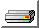

Meu Currículo
Experiência
Atuei na melhoria contínua de produtos de software, criando e refatorando APIs em .NET (C#) e SQL Server, utilizando Git para o versionamento de código.
Participei ativamente da transformação digital desenvolvendo software, implementando APIs e funcionalidades com Angular, .NET em C#, e Banco de Dados Oracle, utilizando Git para controle de versão.
Estive alocado no Banco Itaú, apoiando diretamente o negócio. Desenvolvi funcionalidades e automações com o uso de .NET e SQL Server, o que otimizou a eficiência da área de negócios.
Durante meu estágio, estive envolvido nos esforços de modernização de processos da Secretaria do Verde e Meio Ambiente de São Paulo. Construí sites usando o framework Bootstrap com tecnologias como HTML, CSS e JavaScript.

Formação Acadêmica
